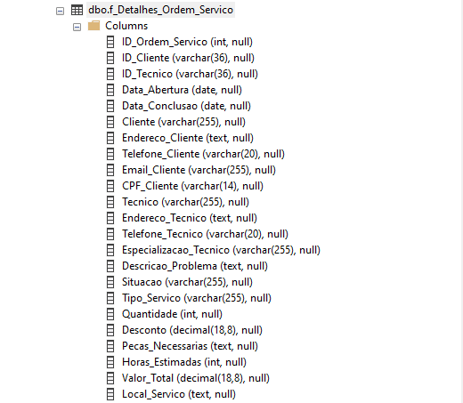
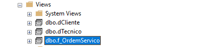
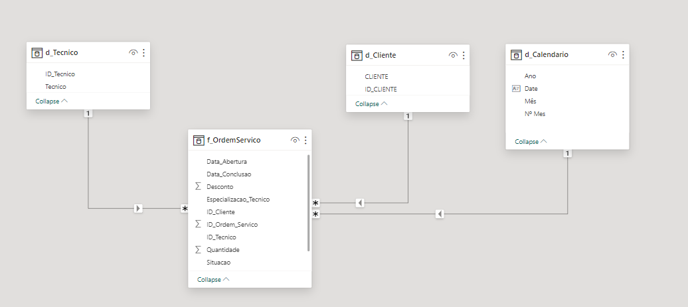
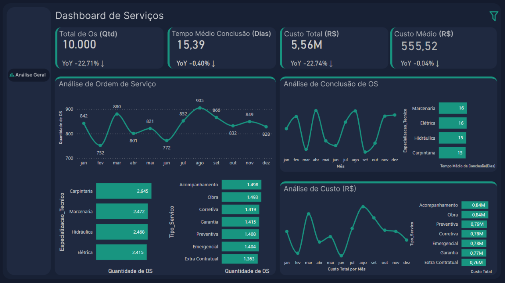

Analysis of Service Orders
Context
Dashboard of a page created for service monitoring. The idea is to start with one page and leave the possibility open to produce additional dashboards as per the client's needs. The original data has been changed.
Step 1: Understanding the data source
Table f_Detalhes_Ordem_Servico
Columns
ID_Ordem_Servico: Service Order ID.ID_Cliente: Customer ID.
ID_Tecnico: Technnician ID.
Data_Abertura: Service Order opening date.
Data_Conclusao: Service Order Closing Date.
Cliente: Customer name.
Endereco_Cliente: Customer address.
Telefone_Cliente: Customer phone number.
Email_Cliente: Customer email.
CPF_Cliente: The customer document id.
Tecnico: Technnician name.
Endereco_Tecnico: Technnician address.
Telefone_Tecnico: Technnician phone number.
Especializacao_Tecnico: Technician Specialization
Descricao_Problema: Problem description.
Situacao: Shows the service order status.
Tipo_Servico: Service Type.
Quantidade: Shows the quantity of service orders.
Desconto: Discount.
Pecas_Necessarias: Parts required to perform the service.
Horas_Estimadas: Estimated service hours.
Valor_Total: Total amount.
Local_Servico: Shows the location where service took place.
Step 2: Business Problem.
Hereafter, the main questions required by the customer:
Main Questions:
-
What is the main problem you expect to solve with this Dashboard?
Improve the existing Dashboard with a more professional layout and add new information, with a macro analysis since the details already exist in the app. -
Do you already have your main indicators defined?
Yes Number of Service Orders, Completion Time (in days), Total Service Order Value~ -
Who will have access?
We will integrate the dashboard into our app so that each client can view their information. So, access will be by client. -
What is the desired level of data granularity?
Day, Month, and Year Client, technician, specialization, status, type of service -
What will be the frequency of data analysis?
Once a day -
Data Availability:
Access to the Database -
What will be the data sources?
SQL Server Database
Step 3: Data Modeling
For this project I created views from the original database. Basically I create a fact table service orders and two dimensions: customers and technician.

Step 4: Data Visualization
In the last stage, after aligning with the client, business questions were answered on just one dashboard page.
Dax Measures